Costa Rica was the final stop on my Central American journey in August 2026, and it announced itself with a spectacular irony. The country widely regarded as the region's most developed greeted me with a border crossing so chaotic, thanks to a computer system that collapsed entirely, that it took over four hours to get through. Once inside, I reunited with my parents and my friend Justin for a gentle few days of hanging bridges, hot springs, and an extraordinary abundance of wildlife. Costa Rica was, I have to admit, the least adrenaline-charged of the countries I visited, but it may also have been the most beautiful, a place of relentless, dripping, greenery.
I spent my time in two contrasting parts of the country. La Fortuna is the tourist hub at the foot of the Arenal Volcano, a tidy town of hot springs and adventure tours living in the shadow of its famous cone. Alajuela is situated on the outskirts of the capital San Jose, and near the international airport. It is a very different place, a workaday city in the Central Valley that felt more rundown and more real, with its graffiti, its lively parks, and its statue of the national hero Juan Santamaría. My honest verdict is that Costa Rica feels like a developing country wearing a developed nation's overcoat, with potholes and bureaucratic snarls beneath the eco-tourism brand and the high life expectancy. And yet it is genuinely charming, and its people are among the most relaxed and friendly I have ever met.
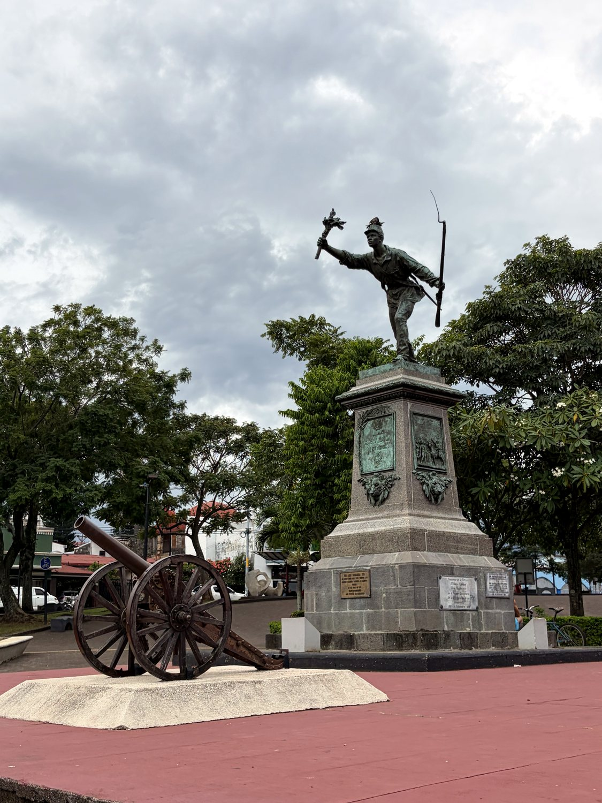
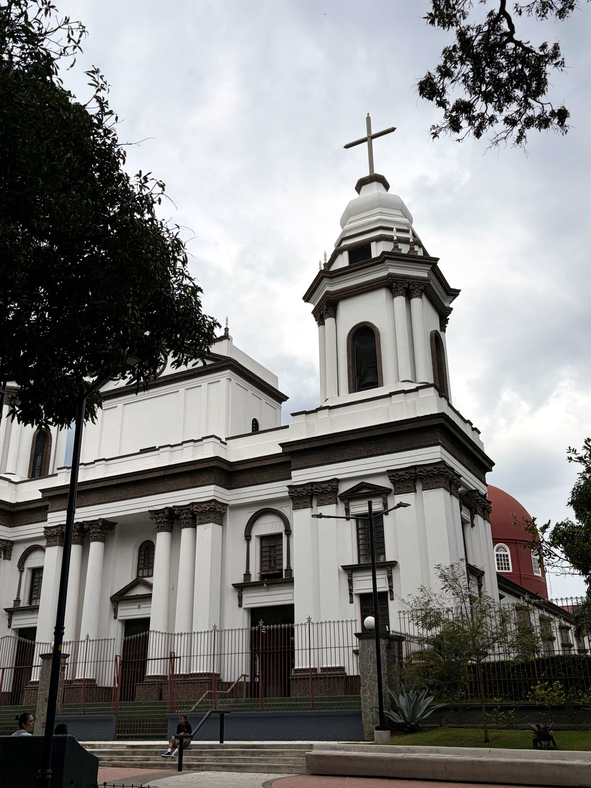
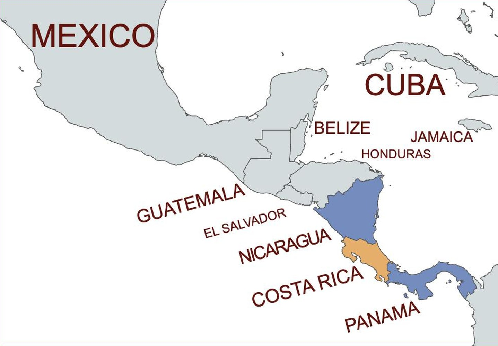
Costa Rica's name means "rich coast," a hopeful label bestowed by early Spanish explorers who expected to find gold and were largely disappointed. That disappointment, oddly, shaped the country's whole character. With little mineral wealth and a small Indigenous population, colonial Costa Rica became a poor, isolated backwater of small independent farmers rather than a land of vast estates and enslaved labour. That relatively egalitarian society of smallholders, so different from its neighbours, laid the foundations for the stable, moderate nation to come. Independence from Spain arrived quietly in 1821, and coffee, not gold, became the crop that finally made the country prosper.
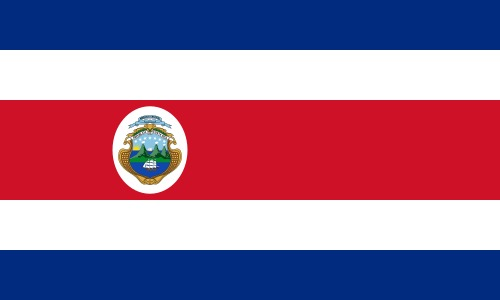
Costa Rica's defining modern moment came in 1948. After a brief civil war, the victorious leader José Figueres did something almost unheard of: he abolished the country's army entirely. In the decades since, Costa Rica has redirected that spending toward education and health, and has become the region's great exception, a stable democracy so peaceful it is often called the Switzerland of Central America. Sitting out the wars that tore apart its neighbours, it reinvented itself as a global pioneer of conservation and eco-tourism, protecting a quarter of its land and drawing visitors from around the world. The national ethos is summed up in two words heard everywhere: "Pura Vida," pure life. The flag, with its bold red band added to a French-inspired blue and white, reflects that outward-looking, republican confidence.
The Mistico Hanging Bridges Park, near Arenal, is a walk through the rainforest at the level of its canopy. A trail loops through the jungle and across a series of suspension bridges strung high above the ravines, so that you find yourself eye to eye with the treetops and looking down onto a rolling sea of green and cloud. It was a delight, not least for watching my mother grow steadily braver on the swaying spans. The forest was loud with life. We heard howler monkeys, whose roar is far more aggressive than anything that size has any right to produce. Near the end we came upon a whole family of spider monkeys, babies included, swinging acrobatically through the branches right above our heads.
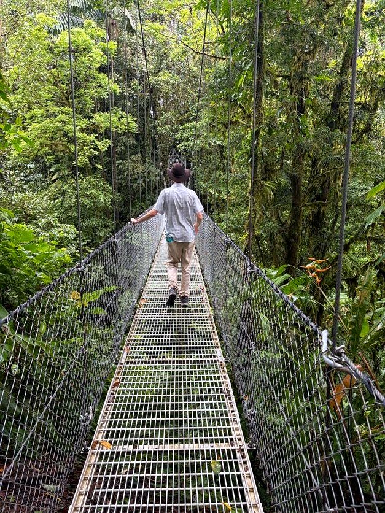
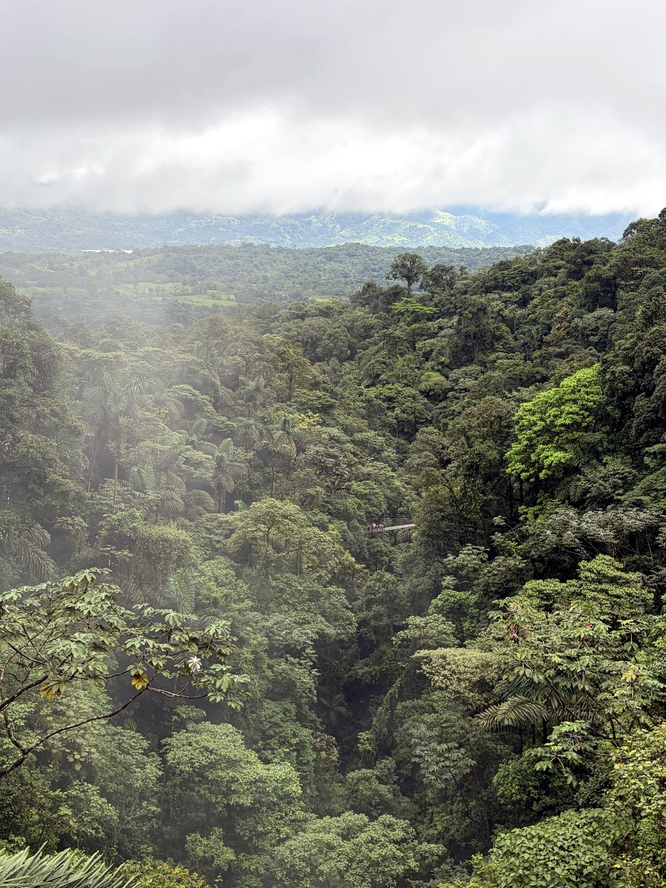
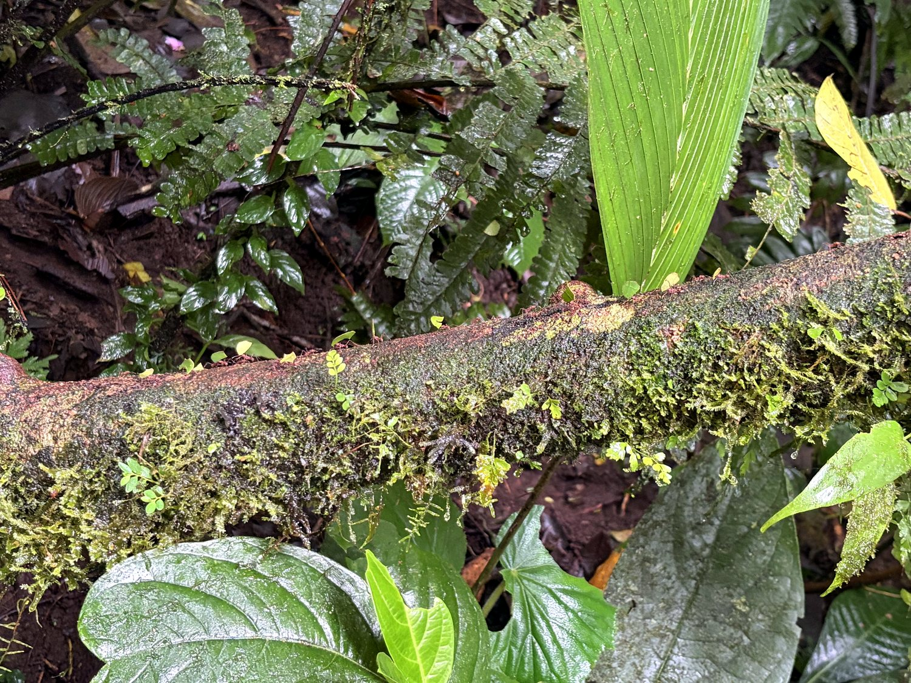
Arenal is the postcard image of Costa Rica, a near-perfect volcanic cone rising over lush green lowlands. For decades it was one of the most active volcanoes in the world, glowing and rumbling nightly, until it abruptly fell quiet in 2010 and settled into its current rest. The heat still simmering beneath it feeds the region's famous thermal hot springs, in which I very happily soaked. I will confess that the volcano itself was a mild letdown on the day, its summit stubbornly wrapped in thick cloud that refused to lift, so that we hiked its lava fields while the star of the show hid backstage. Even shrouded, though, its brooding presence dominates the whole landscape, and the surrounding national park is a gorgeous place to wander. The clouds parted during our drive back to town in the evening, allowing us to finally view the impressive mountain.
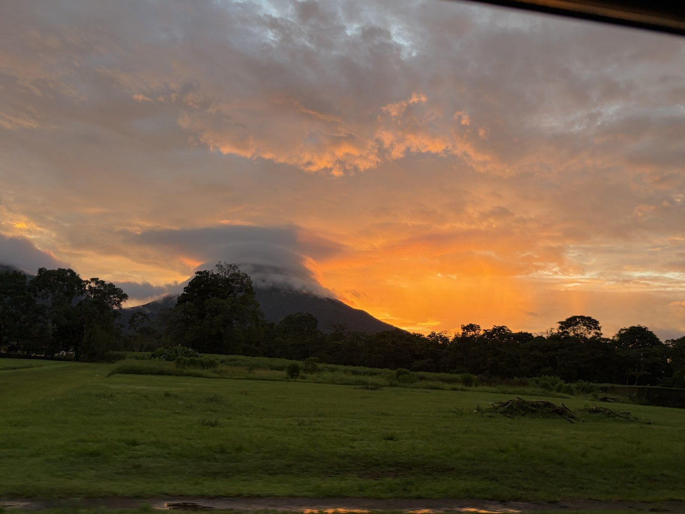
Costa Rica is one of the most biodiverse places on the planet, containing around 5% of all the species on earth within a country smaller than West Virginia. The best way to meet its residents is a guided night walk, and ours, in the cloud forest near Monteverde, was a parade of the wonderful and the unsettling. In a couple of hours we found a rare kinkajou, two toucans, several frogs, an armadillo, a stick insect, and a scorpion that glowed an eerie fluorescent blue under ultraviolet light. The undoubted stars, though, were the tarantulas, three of them, including a striking striped-knee tarantula sitting patiently at the mouth of its burrow. Enormous, hairy, and entirely unbothered by our headlamps, they were the perfect final characters in a country that treats its wildlife as its greatest national treasure.
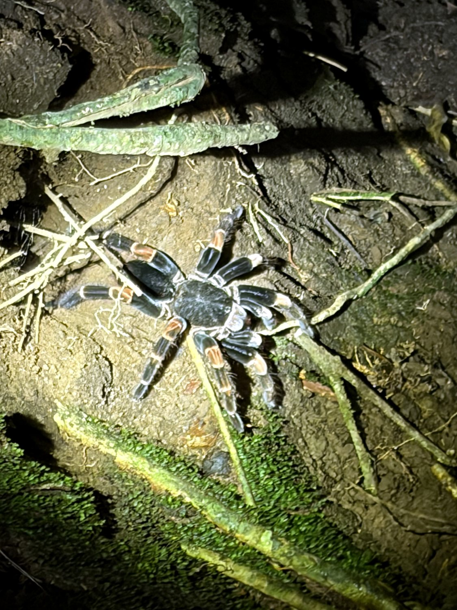
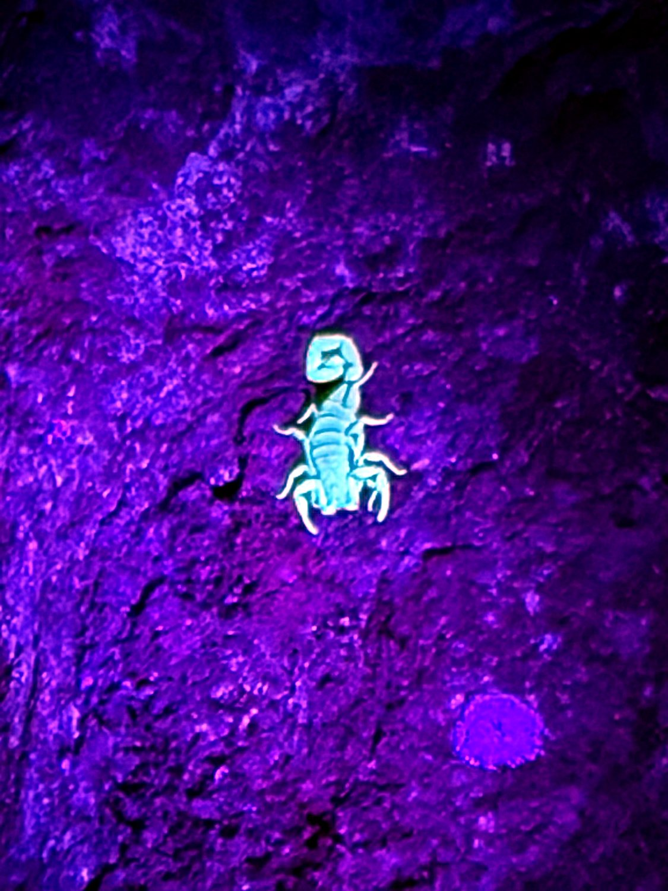
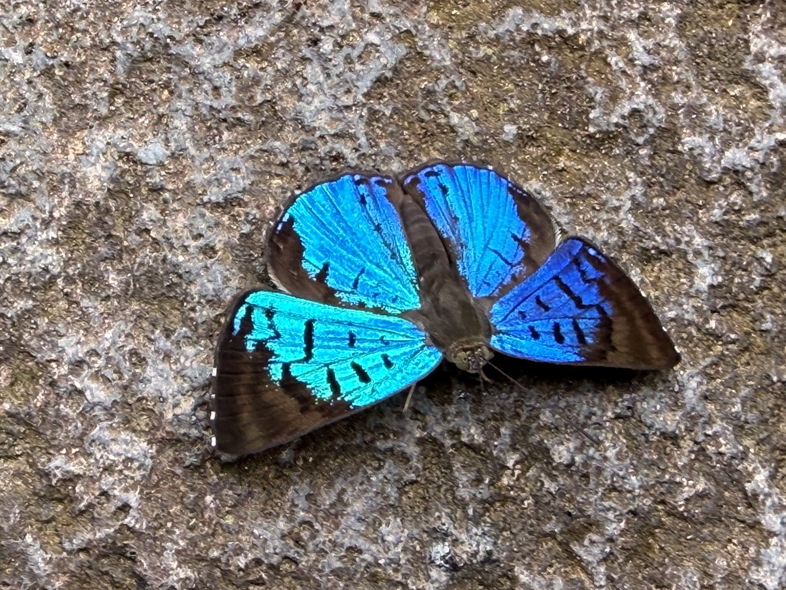